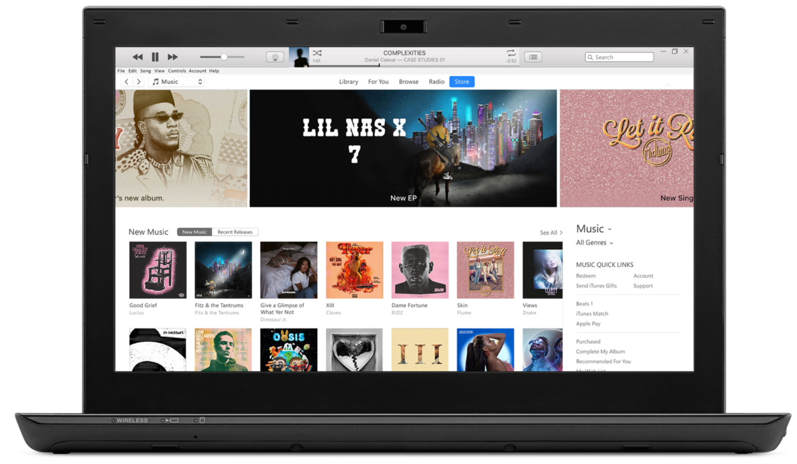

MyTunes
Download the latest version from the Microsoft Store.
The latest entertainment apps now come installed with macOS Catalina. Upgrade today to get your favorite music, movies, TV shows, and podcasts. You can join Apple Music and stream — or download and play offline — over 70 million songs, ad‑free.
iTunes for Windows

Windows System Requirements
Hardware:
- PC with a 1GHz Intel or AMD processor with support for SSE2 and 512MB of RAM
- To play standard-definition video from the iTunes Store, an Intel Pentium D or faster processor, 512MB of RAM, and a DirectX 9.0–compatible video card is required
- To play 720p HD video, an iTunes LP, or iTunes Extras, a 2.0GHz Intel Core 2 Duo or faster processor, 1GB of RAM, and an Intel GMA X3000, ATI Radeon X1300, or NVIDIA GeForce 6150 or better is required
- To play 1080p HD video, a 2.4GHz Intel Core 2 Duo or faster processor, 2GB of RAM, and an Intel GMA X4500HD, ATI Radeon HD 2400, or NVIDIA GeForce 8300 GS or better is required
- Screen resolution of 1024x768 or greater; 1280x800 or greater is required to play an iTunes LP or iTunes Extras
- 16-bit sound card and speakers
- Internet connection to use Apple Music, the iTunes Store, and iTunes Extras
- iTunes-compatible CD or DVD recorder to create audio CDs, MP3 CDs, or backup CDs or DVDs. Songs from the Apple Music catalog cannot be burned to a CD.
Software:
- Windows 7 or later
- 64-bit editions of Windows require the iTunes 64-bit installer
- 400MB of available disk space
- Some third-party visualizers may no longer be compatible with this version of iTunes. Please contact the developer for an updated visualizer that is compatible with iTunes 12.1 or later.
- Apple Music, iTunes Store, and iTunes Match availability may vary by country
- Apple Music trial requires sign-up and is available for new subscribers only. Plan automatically renews after trial.